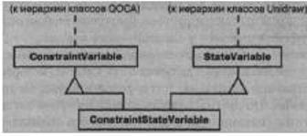
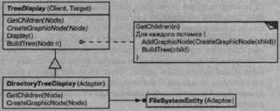
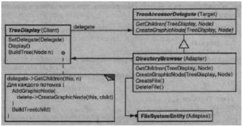

Название и классификация паттерна
Адаптер - паттерн, структурирующий классы и объекты.
Назначение
Преобразует интерфейс одного класса в интерфейс другого, который ожидают клиенты. Адаптер обеспечивает совместную работу классов с несовместимы ми интерфейсами, которая без него была бы невозможна
Известен также под именем
Wrapper (обертка).
Мотивация
Иногда класс из инструментальной библиотеки, спроектированный для повторного использования, не удается использовать только потому, что его интерфейс не соответствует тому, который нужен конкретному приложению.
Рассмотрим, например, графический редактор, благодаря которому пользователи могут рисовать на экране графические элементы (линии, многоугольники,текст и т.д.) и организовывать их в виде картинок и грамм. Основной абстракцией графического редактора является графический объект, который имеет Структурные паттерны изменяемую форму и изображает сам себя. Интерфейс графических объектов определен абстрактным классом Shape.Редактор определяет подкласс класса Shape для каждого вида графических объектов: LineShape для прямых, PolygonShape для многоугольников и т.д.
Классы для элементарных геометрических фигур, например LineShape и PolygonShape, реализовать сравнительно просто, поскольку заложенные в них возможности рисования и редактирования крайне ограничены. Но подкласс Text Shape, умеющий отображать и редактировать текст, уже значительно сложнее, поскольку даже для простейших операций редактирования текста не тривиальным образом обновлять экран и управлять буферами. В то же время, возможно, существует уже готовая библиотека для разработки пользовательских интерфейсов, которая предоставляет развитый класс Text View, позволяющий отображать и редактировать текст. В идеале мы хотели бы повторно использовать Text View для реализации Text Shape, но библиотека разрабатывалась без учета классов Shape, поэтому заставить объекты Text View и Shape работать совместно не удается.
Так каким же образом существующие и независимо разработанные классы вроде Text View могут работать в приложении, которое спроектировано под другой, несовместимый интерфейс? Можно было бы так изменить интерфейс класса Text View, чтобы он соответствовал интерфейсу Shape, только для этого нужен исходный код. Но даже если он доступен, то вряд ли разумно изменять Text View;библиотека не должна приспосабливаться к интерфейсам каждого конкретногоприложения.
Вместо этого мы могли бы определить класс Text Shape так, что он будет адаптировать интерфейс Text View к интерфейсу Shape. Это допустимо сделать двумя способами: наследуя интерфейс от Shape, а реализацию от Text View;включив экземпляр Text View в Text Shape и реализовав Text Shape в терминах интерфейса Text View. Два данных подхода соответствуют вариантам паттерна адаптер в его классовой и объектной ипостасях. Класс Text Shape мы будем называть адаптером.
На этой диаграмме показан адаптер объекта. Видно, как запрос BoundingBox, объявленный в классе Shape, преобразуется в запрос Get Extent, определенный Паттерн Adapter в классе Text View. Поскольку класс Text Shape адаптирует TextView к интерфейсу Shape, графический редактор может воспользоваться классом TextView,хотя тот и имеет несовместимый интерфейс.
Часто адаптер отвечает за функциональность, которую не может предоставить адаптируемый класс. На диаграмме показано, как адаптер выполняет такого рода функции. У пользователя должна быть возможность перемещать любой объект класса Shape в другое место, но в классе TextView такая операция не предусмотрена. Text Shape может добавить недостающую функциональность, самостоятельно реализовав операцию CreateManipulator класса Shape, которая возвращает экземпляр подходящего подкласса Manipulator.
Manipulator - это абстрактный класс объектов, которым известно, как анимировать Shape в ответ на такие действия пользователя как перетаскивание фигуры в другое место. У класса Manipulator имеются подклассы для различных фигур. Например, TextManipulator - подкласс для Text Shape. Возвращая экземпляр TextManipulator, объект класса TextShape добавляет новую функциональность, которой в классе TextView нет, а классу Shape требуется.
Применимость
Применяйте паттерн адаптер, когда:
- хотите использовать существующий класс, но его интерфейс не соответству ет вашим потребностям;
- собираетесь создать повторно используемый класс, который должен взаимодействовать с заранее неизвестными или не связанными с ним классами, имеющими несовместимые интерфейсы
- (только для адаптера объектов!) нужно использовать несколько существующих подклассов, но непрактично адаптировать их интерфейсы путем порождения новых подклассов от каждого. В этом случае адаптер объектов может приспосабливать интерфейс их общего родительского класса.
Структура
Адаптер класса использует множественное наследование для адаптации одного интерфейса к другому.
Адаптер объекта применяет композицию объектов.
Участники
- Target (Shape) - целевой:определяет зависящий от предметной области интерфейс, которым пользуется Client;
- Client (DrawingEditor) - клиент:вступает во взаимоотношения с объектами, удовлетворяющими интерфейсу Target;
- Adaptee (Textview) - адаптируемый:определяет существующий интерфейс, который нуждается в адаптации;
- Adapter (Text Shape) - адаптер:адаптирует интерфейс Adaptee к интерфейсу Target.
Отношения
Клиенты вызывают операции экземпляра адаптера Adapter. В свою очередь адаптер вызывает операции адаптируемого объекта или класса Adaptee, который и выполняет запрос.
Результаты
Результаты применения адаптеров объектов и классов различны. Адаптер класса:
- адаптирует Adaptee к Target, перепоручая действия конкретному классу Adaptee. Поэтому данный паттерн не будет работать, если мы захотим одновременно адаптировать класс и его подклассы;
- позволяет адаптеру Adapter заместить некоторые операции адаптируемого класса Adaptee, так как Adapter есть не что иное как подкласс Adaptee; а вводит только один новый объект. Чтобы добраться до адаптируемого класса, не нужно никакого дополнительного обращения по указателю.
Адаптер объектов:
- позволяет одному адаптеру Adapter работать со многим адаптируемыми объектами Adapteeто есть с самим Adaptee и его подклассами (если таковые имеются).Адаптер может добавить новую функциональность сразу всем адаптируемым объектам
- затрудняет замещение операций класса Adaptee. Для этого потребуется породить от Adaptee подкласс и заставить Adapter ссылаться на этот подкласс, а не на сам Adaptee.
Ниже приведены вопросы, которые следует рассмотреть, когда вы решаете применить паттерн адаптер:
- объем работы по адаптации. Адаптеры сильно отличаются по тому объему работы, который необходим для адаптации интерфейсаAdapt ее к интерфейсу Target. Это может быть как простейшее преобразование, например изменение имен операцийтак и поддержка совершенно другого набора операций. Объем работы зависит от того, насколько сильно отличаются друг отдруга интерфейсы целевого и адаптируемого классов;
- сменные адаптеры. Степень повторной используемости класса тем выше, чем меньше предположений делается о тех классах, которые будут его применять. Встраивая адаптацию интерфейса в класс, вы отказываетесь от предположения, что другим классам станет доступен тот же самый интерфейс. Другими словами, адаптация интерфейса позволяет включить ваш класс в существующие системы, которые спроектированы для класса с другим интерфейсом. В системе ObjectWorks\Smalltalk [РагЭО] используется термин сменный адаптер (pluggable adapter) для обозначения классов со встроенной адаптацией интерфейса. Рассмотрим виджет TreeDisplay, позволяющий графически отображать древовидные структуры. Если бы это был специализированный виджет, предназначенный только для одного приложения, то мы могли бы потребоать специального интерфейса от объектов, в которые он отображает. Но если мы хотим сделать его повторно используемым (например, частью библиоеки полезных виджетов), то предъявлять такое требование неразумно. Разные приложения, скорей всего, будут определять собственные классы для представления древовидных структур, и не следует заставлять их пользоаться именно нашим абстрактным классом Tree. А у разных структур деревьев будут и разные интерфейсы.Например, в иерархии каталогов добраться до потомков удастся с помощью операции GetSubdirector ies, тогда как для иерархии наследования соответствующая операция может называться Get Subclasses. Повторно используемый виджет TreeDisplay должен «уметь» отображать иерархии обоих видов, даже если у них разные интерфейсы. Другими словами, в TreeDisplay должна быть встроена возможность адаптации интерфейсов. О способах встраивания адаптации интерфейсов в классы говорится в разделе «Реализация»;
-
использование двусторонних адаптеров для обеспечения прозрачности.
Адаптеры непрозрачны для всех клиентов. Адаптированный объект уже не обладает интерфейсом Adapt ее, так что его нельзя использовать там, где Adaptee был применим. Двусторонние адаптеры способны обеспечить такую прозрачность. Точнее, они полезны в тех случаях, когда клиент должен видеть объект по-разному.Рассмотрим двусторонний адаптер, который интегрирует каркас графических редакторов Unidraw [VL90] и библиотеку для разрешения ограничений QOCA [HHMV92]. В обеих системах-есть классы, явно представляющие переменные: Паттерн Adapter Структурные паттерны в Unidraw это StateVariable, а в QOCA - ConstraintVariable. Чтобы аставить Unidraw работать совместно с QOCA, ConstraintVariable нужно адаптировать к StateVariable. А для того чтобы решения QOCA распространялись на Unidraw, StateVariable следует адаптировать к ConstraintVariable.
Здесь применен двусторонний адаптер класса ConstraintStateVariable, который является подклассом одновременно StateVariable и ConstraintVariable и адаптирует оба интерфейса друг к другу. Множественное наследование в данном случае вполне приемлемо, поскольку интерфейсы адаптированных классов существенно различаются. Двусторонний адаптер класса соответствует интерфейсам каждого из адаптируемых классов и может работать в любой системе.
Реализация
Хотя реализация адаптера обычно не вызывает затруднений, кое о чем все же стоит помнить:
- реализация адаптеров классов в C++. В C++ реализация адаптера класса Adapter открыто наследует от класса Target и закрыто - от Adaptee.Таким образом, Adapter должен быть подтипом Target, но не Adaptee;
-
сменные адаптеры.
Рассмотрим три способа реализации сменных адаптеров для описанного выше виджета TreeDisplay, который может автоматически отображать иерархические структуры. Первый шаг, общий для всех трех реализаций, - найти «узкий» интерфейс для Adaptee, то есть наименьшее подмножество операций, позволяющее выполнить адаптацию. «Узкий» интерфейс, состоящий всего из пары итераций, легче адаптировать, чем интерфейс из нескольких десятков операций. Для TreeDi splay адаптации подлежит любая иерархическая структура. Минимальный интерфейс мог бы включать всего две операции: одна пределяет графическое представление узла в иерархической структуре, другая - доступ к потомкам узла.«Узкий» интерфейс приводит к трем подходам к реализации:
-
использование абстрактных операций.
Определим в классе TreeDi splay абстрактные операции, которые соответствуют «узкому» интерфейсу класса Adaptee. Подклассы должны реализовывать эти абстрактные операции Паттерн Adapter и адаптировать иерархически структурированный объект. Например, подкласс DirectoryTreeDisplayпри их реализации будет осуществлять доступ к структуре каталогов файловой системы.DirectoryTreeDi splay специализирует узкий интерфейс таким обраом, чтобы он мог отображать структуру каталогов,з составленную из объектов FileSystemEntity;
использование объектов-уполномоченных. При таком подходе TreeDisplay переадресует запросы на доступ к иерархической структуре объекту уполномоченному. TreeDisplay может реализовывать различные стратегии адаптации, подставляя разных уполномоченных. апример, предположим, что существует класс DirectoryBrowser, который использует TreeDisplay. DirectoryBrowser может быть уполномоченным для адаптации TreeDisplay иерархической структуре каталогов. В динамически типизированных языках вроде Smalltalk или Objective С такой подход требует интерфейса для регистрации уполномоченного в адаптере. Тогда TreeDisplay просто переадресует запросы уполномоченному. В системе NEXTSTEP [Add94] этот подход активно используется для уменьшения числа подклассов.В статически типизированных языках вроде C++ требуется явно определять интерфейс для уполномоченного. Специфицировать такой интерфейс можно, поместив «узкий» интерфейс, который необходим классу TreeDisplay, в абстрактный класс TreeAccessorDelegate. Послеэтого допустимо добавить этот интерфейс к выбранному уполномоченному - в данном случае DirectoryBrowser - с помощью наследования. Если у DirectoryBrowser еще нет существующего родительского класса, то воспользуемся одиночным наследованием, если есть - множественным. Подобное смешивание классов проще, чем добавление нового подкласса и реализация его операций по отдельности;
- параметризованные адаптеры. Обычно в Smalltalk для поддержки сменных адаптеров параметризуют адаптер однимили несколькими блоками.Конструкция блока поддерживает адаптацию без порождения подклассов.Блок может адаптировать запрос, а адаптер может хранить блок для каждого отдельного запроса. В нашем примере этоозначает, что TreeDisplay хранит один блок для преобразования узла в GraphicNode, а другой - для доступа к потомкам узла.Например, чтобы создать класс TreeDisplay для отображения иерархии каталогов, мы пишем:
directoryDisplay := (TreeDisplay on: treeRoot) getChiIdrenBlock: [:node | node getSubdirectories] createGraphicNodeBlock: [:node | node createGraphicNode] . Если вы встраиваете интерфейс адаптации в класс, то этот способ дает удобную альтернативу подклассам.
-
использование абстрактных операций.
Определим в классе TreeDi splay абстрактные операции, которые соответствуют «узкому» интерфейсу класса Adaptee. Подклассы должны реализовывать эти абстрактные операции Паттерн Adapter и адаптировать иерархически структурированный объект. Например, подкласс DirectoryTreeDisplayпри их реализации будет осуществлять доступ к структуре каталогов файловой системы.DirectoryTreeDi splay специализирует узкий интерфейс таким обраом, чтобы он мог отображать структуру каталогов,з составленную из объектов FileSystemEntity;
Пример кода
Приведем краткий обзор реализации адаптеров класса и объекта для примера, обсуждавшегося в разделе «Мотивация», при этом начнем с классов Shape и TextView:
class Shape {
public:
Shape();
virtual void BoundingBox(
Points bottomLeft, Point& topRight
) const;
virtual Manipulator* CreateManipulator() const;
};
class TextView {
public:
TextView();
void GetOrigin(Coord& x, Coords y) const; Паттерн Adapter
void GetExtent(Coord& width, Coords height) const;
virtual bool IsEmpty() const;
};
В классе Shape предполагается, что ограничивающий фигуру прямоугольник определяется двумя противоположными углами. Напротив, в классе Text View н характеризуется начальной точкой, высотой и шириной. В классе Shape определена также операция CreateManipulator для создания объекта-манипулятора класса Manipulator, который знает, как анимировать фигуру в ответ на действия пользователя.1 В Text View эквивалентной операции нет. Класс Text Shape является адаптером между двумя этими интерфейсами.
Для адаптации интерфейса адаптер класса использует множественное наследование. Принцип адаптера класса состоит в наследовании интерфейса по одной ветви и реализации - по другой. В C++ интерфейс обычно наследуется открыто, а реализация - закрыто. Мы будем придерживаться этого соглашения при определении адаптера Text Shape:
class TextShape : public Shape, private TextViev {
public:
TextShape();
virtual void BoundingBox(
Point& bottomLeft, Points topRight
) const;
virtual bool IsEmptyO const;
virtual Manipulator* CreateManipulator() const;
};
Операция BoundingBox преобразует интерфейс Text View к интерфейсу Shape:
void TextShape::BoundingBox (
Points bottomLeft, Point& topRight
) const {
Coord bottom, left, width, height;
GetOrigin(bottom, left);
GetExtent(width, height);
bottomLeft = Point(bottom, left);
topRight = Point(bottom + height, left + width);
}
На примере операции IsEmpty демонстрируется прямая переадресация запросов, общих для обоих классов:
bool TextShape::IsEmpty () const {
return TextView::IsEmpty();
}
Наконец, мы определим операцию CreateManipulator ( отсутствующую в классеTextView) с нуля.Предположим, класс TextManipulator, который поддерживает манипуляции с Text Shape, уже реализован:
Manipulator* TextShape::CreateManipulator () const {
return new TextManipulator(this);
}
Адаптер объектов применяет композицию объектов для объединения классов с разными интерфейсами. При таком подходе адаптер TextShape содержит указатель на TextView:
class TextShape : public Shape {
public:
TextShape(TextView*);
virtual void BoundingBox(
Point& bottomLeft, Points topRight
} const;
virtual bool IsEmptyO const;
virtual Manipulator* CreateManipulator() const;
private:
TextView* _text;
};
Объект TextShape должен инициализировать указатель на экземпляр TextView. Делается это в конструкторе. Кроме того, он должен вызывать операции объекта TextView всякий раз, как вызываются его собственные операции. В этом примере мы предположим, что клиент создает объект TextView и передает его конструктору класса TextShape:
TextShape::TextShape (TextView* t) {
__text = t;
}
void TextShape::BoundingBox (
Points bottomLeft, Point& topRight
) const {
Coord bottom, left, width, height;
_text->GetOrigin(bottom, left);
_text->GetExtent(width, height);
bottomLeft = Point(bottom, left);
topRight = Point(bottom + height, left + width);
}
bool TextShape::IsEmpty () const {
return _text->IsEmpty();
}
Реализация CreateManipulator не зависит от версии адаптера класса, поскольку реализована с нуля и не использует повторно никакой функциональности Text View:
Manipulator* TextShape::CreateManipulator () const {
return new TextManipulator(this);
}
Сравним этот код с кодом адаптера класса. Для написания адаптера объекта нужно потратить чуть больше усилий, но зато он оказывается более гибким. Например, вариант адаптера объекта TextShape будет прекрасно работать и с подклассами Text View: клиент просто передает экземпляр подкласса Text View конструктору TextShape.
Известные применения
Пример, приведенный в разделе «Мотивация», заимствован из графического приложения ET++Draw, основанного на каркасе ЕТ++ [WGM88]. ET++Draw повторно использует классы ЕТ++ для редактирования текста, применяя для адаптации класс TextShape.
В библиотеке Interviews 2.6 определен абстрактный класс Interactor для таких элементов пользовательского интерфейса, как полосы прокрутки, кнопки и меню [VL88]. Есть также абстрактный класс Graphic для структурированных графических объектов: прямых, окружностей, многоугольников и сплайнов. И Interactor, и Graphic имеют графическое представление но у них разные интерфейсы и реализации (общих родительских классов нет), и значит, они не совместимы: нельзя непосредственно вложить структурированный графический объект, скажем, в диалоговое окно.
Вместо этого Interviews 2.6 определяет адаптер объектов GraphicBlock - подкласс Interactor, который содержит экземпляр Graphic. GraphicBlock адап-тирует интерфейс класса Graphic к интерфейсу Interactor, позволяет отображать, прокручивать и изменять масштаб экземпляра Graphic внутри структуры класса Interactor.
Сменные адаптеры широко применяются в системе ObjectWorks\Smalltalk [Раг90]. В стандартном Smalltalk определен класс ValueModel для видов, которые отображают единственное значение. ValueModel определяет интерфейс value, value: для доступа к значению. Это абстрактные методы. Авторы приложений обращаются к значению по имени, более соответствующему предметной области, например width и width:, но они не обязаны порождать от ValueModel подклассы для адаптации таких зависящих от приложения имен к интерфейсу ValueModel.
Вместо этого ObjectWorks\Smalltalk включает подкласс ValueModel, называющийся PluggableAdaptor. Объект этого класса адаптирует другие объекты к интерфейсу ValueModel (value, value:). Его можно параметризовать блоками для получения и установки нужного значения. Внутри PluggableAdaptor эти блоки используются для реализации интерфейса value, value:. Этот класс позволяет также передавать имена селекторов (например, width, width:) непосредственно, обеспечивая тем самым некоторое синтаксическое удобство. Данные селекторы преобразуются в соответствующие блоки автоматически.
Еще один пример из ObjectWorks\Smalltalk - это класс TableAdaptor. Он может адаптировать последовательность объектов к табличному представлению. В таблице отображается по одному объекту в строке. Клиент параметризует TableAdaptor множеством сообщений, которые используются таблицей для получения от объекта значения в колонках
В некоторых классах библиотеки NeXT AppKit [Add94] используются объекты-уполномоченные для реализации интерфейса адаптации. В качестве примера можно привести класс NXBrowser, который способен отображать иерархические списки данных. NXBrowser пользуется объектом-уполномоченным для доступа и адаптации данных.
Придуманная Скоттом Мейером (Scott Meyer) конструкция «брак по расчету» (Marriage of Convenience) [Mey88] это разновидность адаптера класса. Мейер описывает, как класс FixedStack адаптирует реализацию класса Array к интерфейсу класса Stack. Результатом является стек, содержащий фиксированное число элементов.